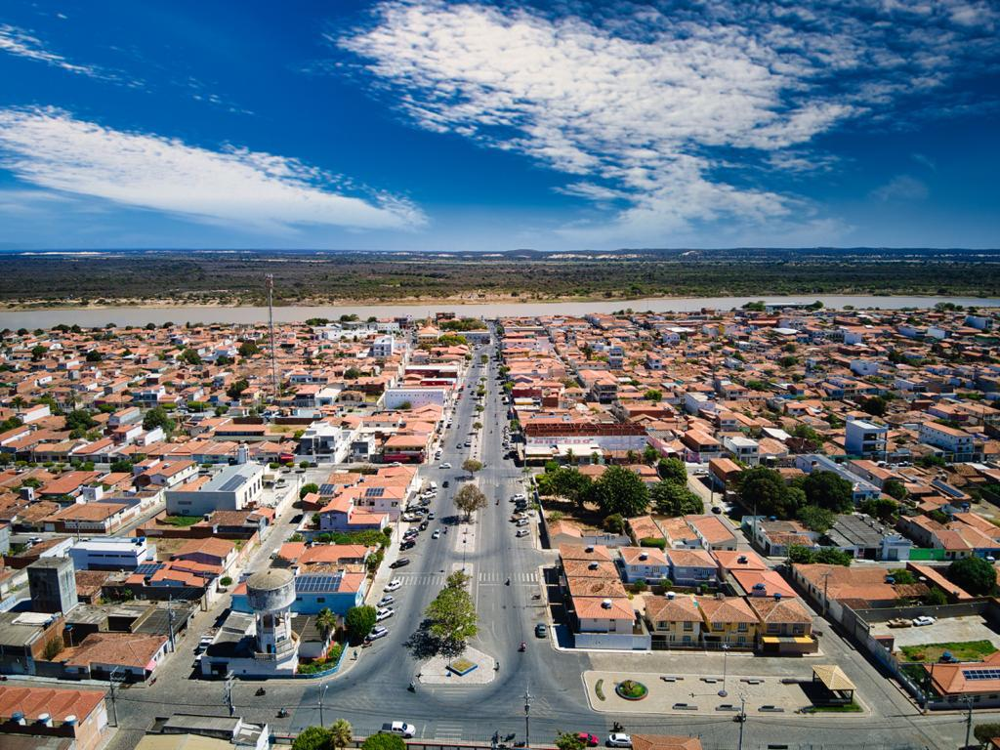
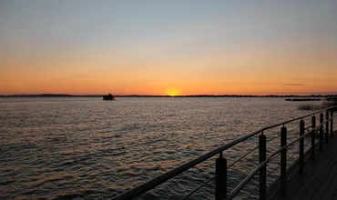

Turismo
Visão da cidade

Orla da praia de Xique Xique
Uma vista linda para visitar.

Parque aquático Ponta das Pedras
Um parque aquático para levar toda a família.
 Ruas de XiquexiquePraça D. Máximo (Jardim Centro) de Xique.jpg)
Praça do Chafariz
No centro de Xique Xique.